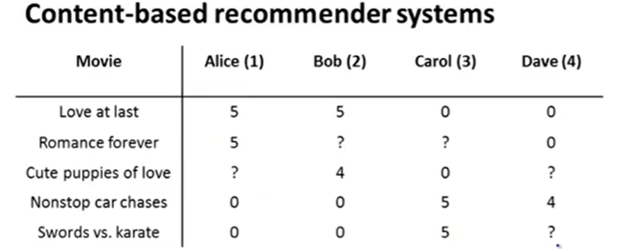
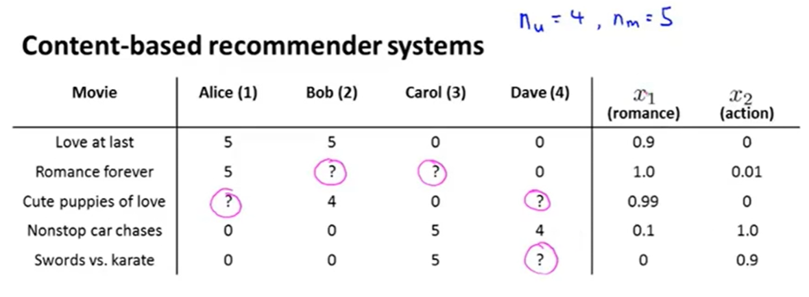
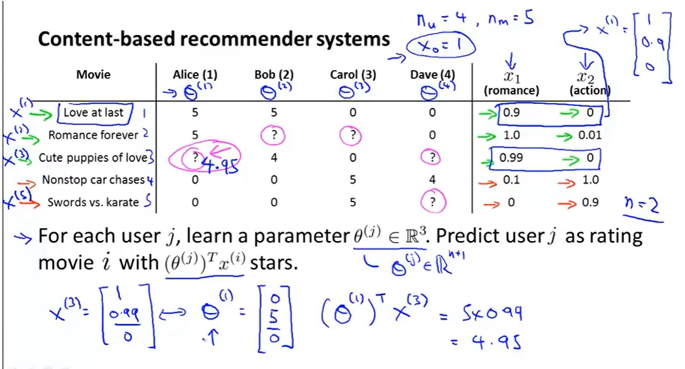
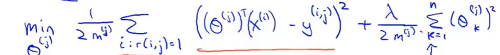
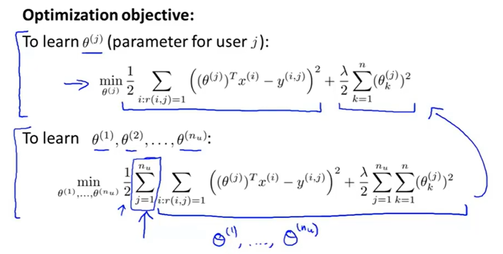
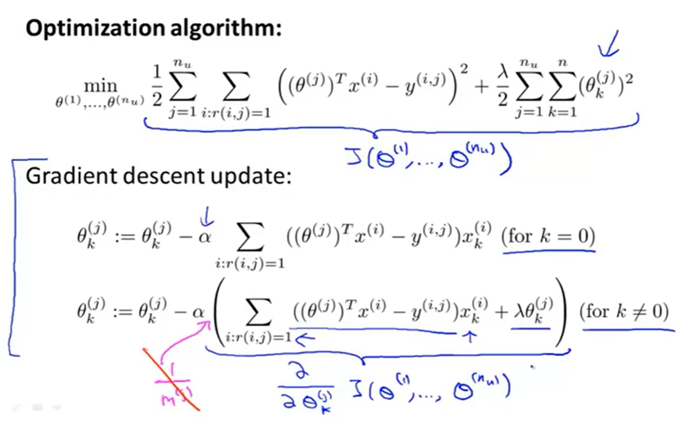

基于内容的推荐算法：以电影推荐为例
讲个故事哈：
在一个周五的傍晚，你独自取了外卖，回到寝室，拿起手机，准备边吃饭边欣赏电影的精彩。
你打开了外卖包装，一边吃一边快速地刷着视频软件。
不久，外卖盒子已是空空如也，而你仍然在快速地刷着视频软件。
没错，此时外卖已吃完，你还是没有找到想看的电影，反被淹没在信息流的大海。
推荐系统是个啥？
随着社会的发展和科技的进步，互联网上的信息变得越来越多，对于用户来说，很难直接对这些信息加以有效利用。
因此，如何做到对不同用户推送其所需要的内容是非常必要的，这便引出了推荐系统。
事实上，你每天都在接触它。B站首页内容，抖音短视频，淘宝首页，腾讯视频首页等等，背后都是推荐系统在起作用。
我打算花一些时间去学习推荐系统领域相关的知识，所有的学习笔记将更新在本号，欢迎小伙伴们持续关注丫~
基于内容的推荐算法
推荐系统所采用的算法，称之为推荐算法。推荐算法的种类较多，本文将参考吴恩达老师的视频，介绍基于内容的推荐算法(Content-based recommender systems)。
所有内容均基于下面的栗子。

在这个栗子中，我们将构建一个基于内容的电影推荐系统。
总共5部电影：Love at last，Romance forever，Cute puppies，Nonstop car chases，Swords vs. karate
总共4个用户：Alice，Bob，Carol，Dave
设$n_u$为总用户数，$n_m$为总电影数，则$n_u=4$，$n_m=5$.
表中的数字代表某个用户对于某部电影的评分，比如Alice 对于电影《Love at last》的评分为5。
我们的目标是预测表中打问号的数字，即某个用户对于该用户还未看过的电影的预测评分。比如，Alice 还没看过《Cute puppies of love》这部电影，因此对应位置打了问号，该位置的数字需要我们去预测。
假设每部电影都有一个特征向量与之对应，特征向量的维度用$n$来表示。在这个栗子中，该特征向量维度为2，于是$n=2$，分别表示了该特征向量对应的电影是romance还是action的程度。通俗来讲，就是该电影是爱情片还是动作片，romance越大，越有可能是爱情片，action越大，越有可能是动作片。
对于每部电影，假设已经计算得到其对应的特征向量：

特征向量的两个维度分别记作$x_1$与$x_2$，表示romance和action的程度。比如《Love at last》中的romance为0.9，而action为0，那么就可以说这部电影是一部爱情片。
这里，我们为每一部电影对应的特征向量加一维：截距，并全部设置为1.
于是，《Love at last》对应的特征向量为$x^{(1)}=(x_0,x_1,x_2)=(1,0.9,0)$。同理，其余4部电影对应的特征向量分别为
$$x^{(2)}=(1,1.0,0.001)$$
$$x^{(3)}=(1,0.99,0)$$
$$x^{(4)}=(1,0.1,1.0)$$
$$x^{(5)}=(1,0,0.9)$$
现在，如何预测Alice对于电影《Cute puppies of love》的评分呢？
我们需要对每一个用户预测一个$n+1=2+1=3$维的参数向量$\theta$。$\theta^{(1)},\theta^{(2)},\theta^{(3)},\theta ^{(4)}$分别代表了4个用户的参数向量。具体如何得到$\theta$将会在稍后叙述。
总之，当有了$\theta$后，Alice对于电影《Cute puppies of love》的评分计算如下：
$${(\theta^{(1)})}^T x^{(3)}$$

同理，可以计算得到表中其余打问号的位置所对应的电影评分。
根据预测得到的评分，就可以决定是否将这部用户还未看过的电影推荐给用户了。
接下来介绍如何预测得到每个用户的参数向量$\theta$。
记$r(i,j)$表示第j个用户是否对第i部电影做了评分，已评为1，否则为0.
记$y^{(i,j)}$表示第j个用户对于第i部电影的评分分值。当然，前提是已经做过评分。
记$m^{(j)}$表示第j个用户已经评分的电影数量。
于是，第$j$个用户对于的参数向量$\theta^{(j)}$，可以转为解下面的最优化问题：

这是一个回归问题，和线性回归解法类似。
其中加入了正则项，n=2。k从1开始，因为一般不对第0维(k=0)做正则化处理。
由于$m^{(j)}$只是一个常数，对最终的最优化结果没有影响，因此可以去掉。
以上仅仅是对单个用户j进行的$\theta^{(j)}$的预测。在推荐系统中，需要对全部用户的$\theta$进行预测，于是最终的优化目标如下（第二条）：

这种最优化问题的解法有很多，这里采用梯度下降法进行求解：

由于第$0$维$（k=0）$没有加正则项，因此分了$k=0$和$k!=0$两种情况。
这样便得到了我们之前用到的用户参数向量$\theta$.
总结
本文介绍了推荐系统的概念以及基于内容的推荐算法。
这种基于内容的推荐算法，要求事先定义好每部电影的特征向量（可推广到商品，即每件商品的特征向量；也可推广到音乐，即每首音乐的特征向量；等等等等），特征向量的每个维度代表了电影的一个属性，因此具有较好的解释性。
但是实际中往往很难去定义每部电影的特征向量，而且这种算法依赖于对用户已有电影的评分进行建模预测得到的参数向量$\theta$，而新用户并没有这些信息，因此无法对新用户进行推荐，这也就是所谓的冷启动问题。